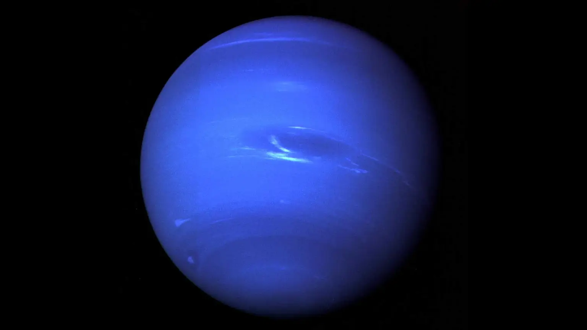

Dark, cold and whipped by supersonic winds, ice giant Neptune is the eighth and most distant planet in our solar system. More than 30 times as far from the Sun as Earth, Neptune is the only planet in our solar system not visible to the naked eye. In 2011 Neptune completed its first 165-year orbit since its discovery in 1846. Neptune is so far from the Sun that high noon on the big blue planet would seem like dim twilight to us. The warm light we see here on our home planet is roughly 900 times as bright as sunlight on Neptune. Neptune is one of two ice giants in the outer solar system (the other is Uranus).
Most (80 percent or more) of the planet's mass is made up of a hot dense fluid of "icy" materials — water, methane and ammonia — above a small, rocky core. Of the giant planets, Neptune is the densest. Scientists think there might be an ocean of super hot water under Neptune's cold clouds. It does not boil away because incredibly high pressure keeps it locked inside. Neptune's atmosphere is made up mostly of hydrogen and helium with just a little bit of methane. Neptune's neighbor Uranus is a blue-green color due to such atmospheric methane, but Neptune is a more vivid, brighter blue, so there must be an unknown component that causes the more intense color.